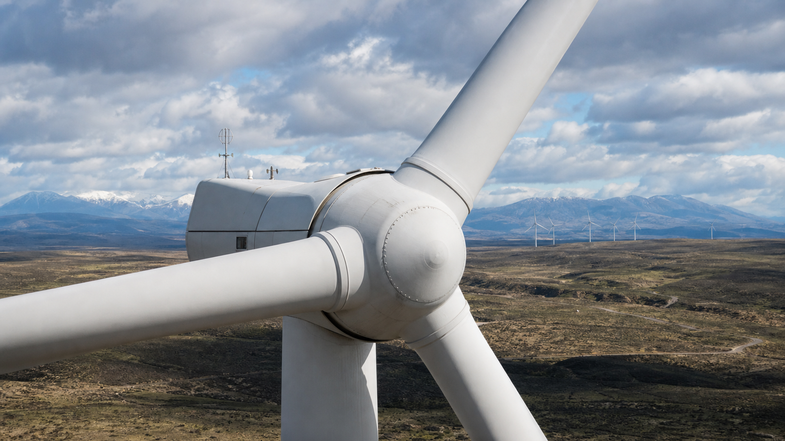
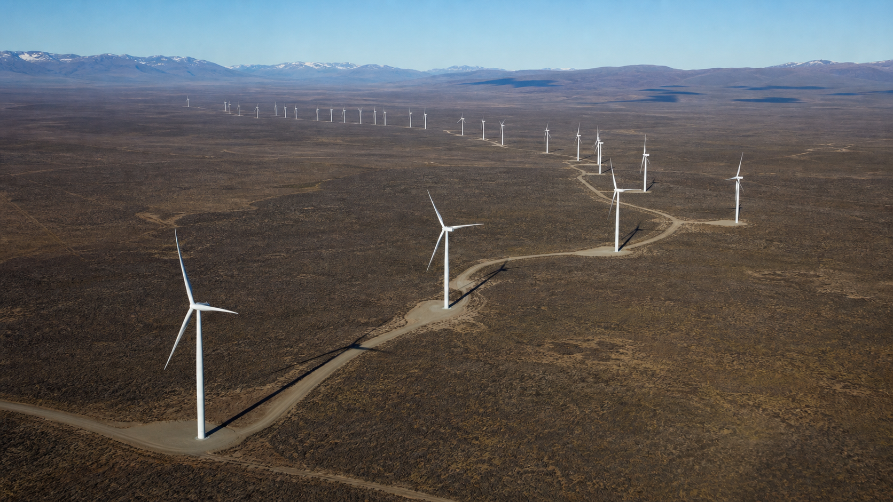

¿Qué es?
La energía eólica aprovecha la energía cinética del viento para generar electricidad. El viento mueve las aspas de un aerogenerador, que están conectadas a un rotor. Este rotor hace girar un generador eléctrico, produciendo electricidad. Es una de las tecnologías renovables de más rápido crecimiento en el mundo y Argentina es uno de los países con mayor potencial.
La cantidad de energía que puede extraerse del viento depende de la velocidad del viento elevada al cubo (P ∝ v³): si la velocidad del viento se duplica, la potencia disponible se multiplica por ocho. Por eso la ubicación de los parques eólicos es crucial: una pequeña diferencia en la velocidad media del viento tiene un impacto enorme en la producción.
Los aerogeneradores modernos son máquinas impresionantes: sus torres miden entre 80 y 120 metros de altura (como un edificio de 30 pisos) y el diámetro de sus aspas alcanza los 50 a 100 metros. Cada turbina puede generar entre 2 y 5 MW de potencia, suficiente para abastecer a cientos de hogares.
Laboratorio interactivo
Parque eólico en 3D
Explorá cómo el viento mueve los aerogeneradores y cómo la electricidad viaja desde el parque hasta el pueblo. Cambiá la velocidad del viento, el ciclo día/noche y la cámara para observar cada parte del sistema.
Referencia argentina: Parque Eólico Los Teros, Azul, provincia de Buenos Aires. El paisaje 3D es una recreación educativa del entorno rural y no una reproducción cartográfica exacta.
Usos
El uso principal de la energía eólica es la generación eléctrica en parques eólicos, que pueden estar en tierra (onshore) o en el mar (offshore). En Argentina, todos los parques eólicos son onshore y se concentran en la Patagonia, aunque también hay proyectos en Buenos Aires y La Rioja.
- ▸Parque Eólico Rawson (Chubut): 250 MW de capacidad, uno de los más grandes del país. Ubicado en la costa atlántica, donde los vientos superan los 11 m/s de promedio.
- ▸Parque Eólico Madryn (Chubut): 200 MW, también en la provincia de Chubut, cerca de Puerto Madryn.
- ▸Parque Eólico Arauco (La Rioja): 200 MW, uno de los pocos parques fuera de la Patagonia con buena performance.
- ▸Bombeo de agua: Los tradicionales molinos de viento multipala se usan en zonas rurales para extraer agua de pozos, sin necesidad de electricidad.
Rendimiento
La eficiencia de los aerogeneradores modernos es notable: convierten entre el 40% y 50% de la energía cinética del viento en electricidad. Existe un límite teórico máximo conocido como el Límite de Betz (59,3%), que establece que ninguna turbina puede extraer más del 59,3% de la energía del viento que la atraviesa.
El factor de capacidad (la relación entre lo que una planta genera realmente y lo que generaría si funcionara al máximo todo el tiempo) es excepcional en Argentina: oscila entre 30% y 45% en los parques patagónicos, muy por encima del promedio mundial de 25-30%. En la Patagonia, los vientos promedio superan los 10-12 m/s, condiciones ideales para la generación eólica.
La tecnología sigue mejorando: las turbinas actuales son más grandes, más eficientes y más confiables que las de hace una década. Los factores de capacidad han pasado del 20% en 2000 al 35-45% actual en los mejores sitios.
Lugar en Argentina
Argentina tiene uno de los mejores recursos eólicos del planeta, especialmente en la Patagonia. Los vientos constantes y fuertes de la región, impulsados por los vientos del Oeste y la cercanía al océano, crean condiciones inmejorables para la generación eólica.
- ▸Chubut: Rawson, Madryn, Diadema. Es la provincia con mayor capacidad instalada del país.
- ▸Santa Cruz: Puerto Deseado, San Julián, Cañadón León. Vientos aún más intensos que en Chubut.
- ▸Río Negro: Pomona, General Conesa. Proyectos en desarrollo con buenos factores de capacidad.
- ▸Buenos Aires: Tandil, Bahía Blanca, Necochea. Parques eólicos en regiones más cercanas a los centros de consumo.
- ▸La Rioja: Arauco. El parque eólico más importante del norte argentino.
El Corredor Eólico Patagónico es una región que abarca el este de Chubut y Santa Cruz, donde los factores de capacidad alcanzan el 50%, los más altos del mundo. Esta región es comparable a los mejores sitios de Dinamarca, Reino Unido y Alemania, pero con mucho más espacio disponible.

En la matriz energética
La energía eólica es la fuente renovable no hidroeléctrica que más aporta a la matriz eléctrica argentina. En 2024 representó aproximadamente el 10% de la electricidad total del país, superando por primera vez a la nuclear y acercándose a la hidroeléctrica.
El crecimiento fue explosivo a partir de 2018, impulsado por las Rondas RenovAR, un programa de licitaciones que garantizó contratos de largo plazo para proyectos renovables. La capacidad instalada eólica pasó de menos de 500 MW en 2017 a más de 3.200 MW en 2024. Se espera que esta cifra supere los 5.000 MW para 2030.
Implicancia real
Argentina es el país con mejor factor de capacidad eólico del mundo, superando a Dinamarca, Alemania y el Reino Unido. Esto significa que cada aerogenerador instalado en la Patagonia produce más electricidad por unidad de potencia que en cualquier otro lugar del planeta. Es una ventaja comparativa enorme que el país está empezando a aprovechar.
El principal desafío es la transmisión: los parques eólicos están en el sur (donde está el recurso) pero los centros de consumo están en el centro y norte del país (AMBA, Litoral, Córdoba). Para llevar esa energía se necesitan líneas de alta tensión de miles de kilómetros. El Gasoducto NK y las nuevas líneas de transmisión planificadas ayudarán a integrar la energía eólica patagónica al sistema nacional.
La eólica genera empleo local en regiones con poca industria. La construcción y operación de parques eólicos en Chubut y Santa Cruz ha creado cientos de puestos de trabajo directos e indirectos. Empresas como Genneia, YPF Luz y Petroquímica Comodoro Rivadavia lideran el desarrollo eólico en el país.

Ventajas y desventajas
Ventajas
- ✓Viento abundante y constante en la Patagonia argentina.
- ✓Bajo costo operativo una vez instalado el aerogenerador.
- ✓No emite CO₂ ni contaminantes durante su operación.
- ✓Crea empleo local en regiones con baja industrialización.
- ✓Puede generar electricidad las 24 horas (a diferencia de la solar).
- ✓El terreno de los parques eólicos puede compartirse con ganadería.
Desventajas
- ✗Intermitente: en días sin viento la generación cae drásticamente.
- ✗Impacto visual y ruido: las turbinas son grandes y generan sonido.
- ✗Puede afectar aves migratorias y murciélagos en las rutas de vuelo.
- ✗Alta inversión inicial (aunque los costos han bajado mucho).
- ✗Dificultad de transmisión: la Patagonia está lejos de los centros de consumo.
- ✗Las aspas tienen una vida útil limitada y son difíciles de reciclar.